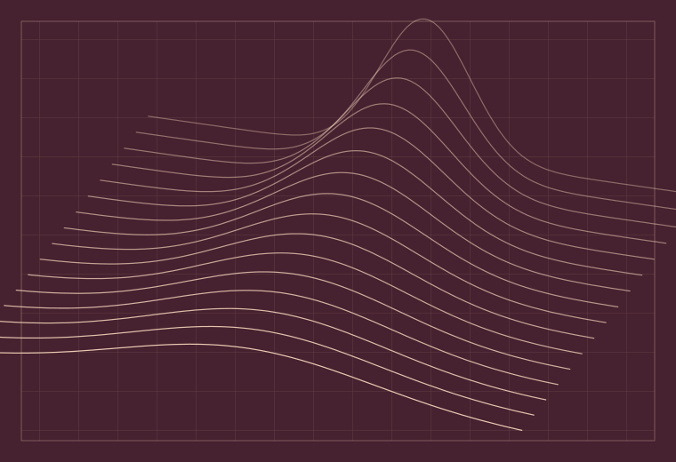
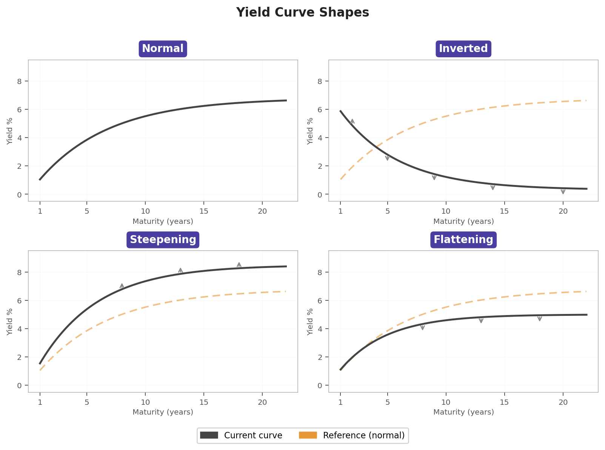
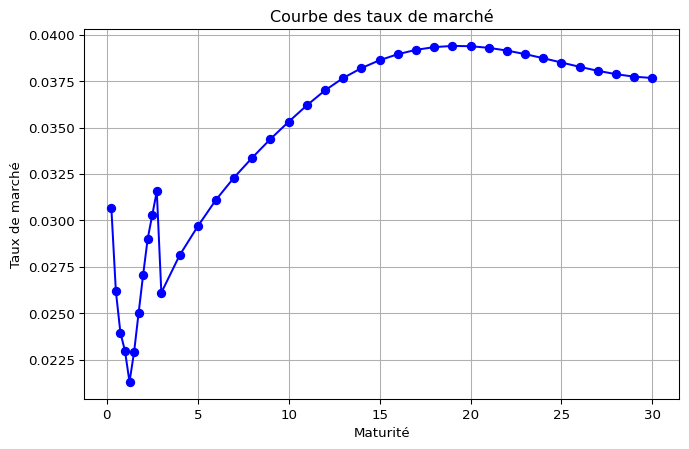

Mathematics · Statistics · Quantitative Finance
A personal research journal
Exploring mathematics, uncertainty and financial systems.
Research notes, essays and computational explorations by Cheryl Kouadio.

Featured Writing
Quantitative Finance · Interest Rates
Interest rates market - Key instruments
From zero-coupon bonds and the term structure to forward rates and the derivatives that depend on them.

Selected Writings
Mathematical Foundations
Mathematical foundations of financial market modeling
Market instruments, self-financing strategies and no-arbitrage in discrete time.
Statistics
Corrélation de Spearman vs corrélation de Pearson
A comparison of rank-based and linear measures of dependence.
Stochastic Processes
Calibration du modèle Black-Scholes
An exploration of volatility calibration under the Black–Scholes model.
Research Highlights
Yield Curve Calibration
Modèles de courbe de taux
An empirical reconstruction of a zero-coupon yield curve, followed by Hull–White calibration and a Monte Carlo application to barrier caplets.
